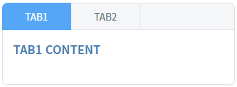
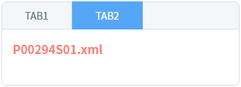

TabControl의 'getTabInfo' 메소드를 사용하여 각 탭의 정보를 반환받는 예제입니다. 각 탭의 정보를 JSON으로 구성하여 Array로 반환합니다.
모든 탭의 정보 반환받기
1
STEP 1: 초기 상태를 확인합니다.
TabControl에 2개의 탭이 구성되어 있고, 탭 'TAB1'이 선택된 상태입니다. 각 탭의 콘텐츠는 다음과 같이 지정되어있습니다.
탭 'TAB1' : 화면 내 직접 구성.
탭 'TAB2' : TabControl의 'addTab' 메소드를 사용하여 WFrame으로 파일 'P00294S01.xml'을 지정.
Image 1.브라우저(Chrome) 실행 예시 - 탭 'TAB1'이 선택된 상태

Image 2.브라우저(Chrome) 실행 예시 - 탭 'TAB2'가 선택된 상태

2
STEP 2: 탭의 정보를 확인합니다.
'탭의 정보 반환받기' 버튼을 클릭합니다.3
STEP 3: 실행된 결과를 확인합니다.
화면의 로그 확인 textarea 또는 브라우저의 개발자 도구의 콘솔(console)탭에 출력된 로그를 확인합니다.
Example 1.Log
[04:56:05] # TabControl의 'getTabInfo' 메소드의 반환 값:
[
{
"id": "tabs1",
"label": "TAB1",
"defaultTabIndex": 0,
"currentTabIndex": 0,
"src": "",
"alwaysDraw": false
},
{
"id": "tab_exam",
"label": "TAB2",
"defaultTabIndex": 1,
"currentTabIndex": 1,
"src": "/page/P00294S01.xml",
"alwaysDraw": false
}
]TabControl의 'getTabInfo' 메소드를 사용하여 스크립트를 작성합니다. 세부 설정은 아래의 스크립트 예시에 작성되어 있습니다.
Example 2.Script
// TabControl 'tac_exam1'의 탭 정보를 반환받습니다. var result = tac_exam1.getTabInfo(); // 반환 값 예시) // [ // { // "id": "tabs1", // "label": "TAB1", // "defaultTabIndex": 0, // "currentTabIndex": 0, // "src": "", // "alwaysDraw": false // }, // { // "id": "tab_exam", // "label": "TAB2", // "defaultTabIndex": 1, // "currentTabIndex": 1, // "src": "/page/P00294S01.xml", // "alwaysDraw": false // } // ]
getTabInfo( )